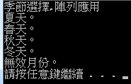
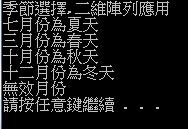

陣列
(1)一維陣列、(2)二維陣列
(1)一維陣列 :
資料型態 陣列名稱[大小]={初始值}；
int season[4];
|
void main() { printf("季節選擇,陣列應用\n"); int season[5]={7,3,10,12,44},i;//宣告名為season的一維陣列並給他初始值 for(i=0;i<=4;i++)//一開始i等於零進入迴圈，每執行一次，i加一，直到大於四時 ，跳出迴圈。 switch(season[i])//引入陣列內的數值 { case 7://season為7，印出夏天 printf("夏天\n"); break; case 3://season為3，印出春天 printf("春天\n"); break; case 10://season為10，印出秋天 printf("秋天\n"); break; case 12://season為12，印出冬天 printf("冬天\n"); break; default://season為其他數字，印出請重新輸入 printf("請輸入正確季節月份\n"); } |
輸出結果:  |
(2)二維陣列 :
資料型態 陣列名稱[大小][大小]={{初始值},{初始值}}；
char season[2][5]={{'1','2','3','4','5'},{'A','B','C','D','E'}};
|
void main() { printf("季節選擇,二維陣列應用\n"); char season[2][5]={{'1','2','3','4','5'},{'A','B','C','D','E'}},i;//宣告名為season的二維陣列並給他初始值 for(i=0;i<=4;i++)//一開始i等於零進入迴圈，每執行一次，i加一，直到大於四時 ，跳出迴圈。 { if(season[0][i]=='1'&&season[1][i]=='A') printf("七月份為夏天\n");//若為陣列為1和A時，印出七月份為夏天 else if(season[0][i]=='2'&&season[1][i]=='B') printf("三月份為春天\n");//若為陣列為2和B時，印出三月份為春天 else if(season[0][i]=='3'&&season[1][i]=='C') printf("十月份為秋天\n");//若為陣列為3和C時，印出十月份為秋天 else if(season[0][i]=='4'&&season[1][i]=='D') printf("十二月份為冬天\n");//若為陣列為4和D時，印出十二月份為冬天 else if(season[0][i]=='5'&&season[1][i]=='E') printf("無效月份\n");//若為陣列為5和E時，印出無效月份 } } } P.S.&&代表要兩個成立才算喔，else if有否則的意思，通常用來多重選擇 |
輸出結果:  |